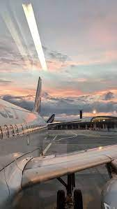
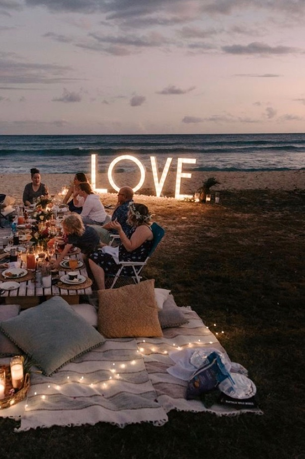
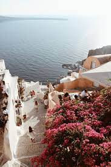
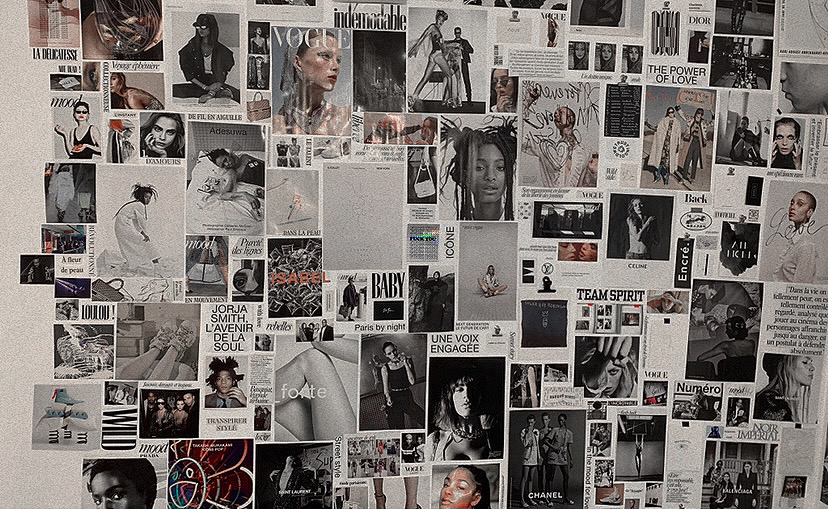

"I am a first year student at the ESSEC Business School, located in Cergy Pontoise, close to Paris. I studie various disciplines : marketing, macro and micro-economy, maths, languages, right, and accounting. I am interested in divers professional sectors such as digital marketing, event or fashion, more particularly in the luxury universe."
Discover Le Wagon"I'm passionnated about fashion. My biggest dream is to work in this sector. As far as I can remember I always loved this univers full of creativity, richness and constant renewing. My love ones instilled me the culture of beauty and openness to the world and its diversity."
  
"I dream to travel all around the world. I deeply love to discover new cultures including : unknown landscapes, people, languages, horizons, way of thinking, religions, hisoties, lifestyles..."

"I love to imortalize moment or simple aesthetic details. I am really interested in digital communication. I have a certain sens of aesthetic, plus I'm very meticulus and I always want my works to be "perfect". Furthermore, I enjoy to compose moodboards, it inspires me and permite me to set goals."